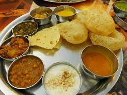
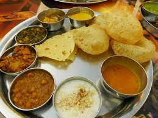
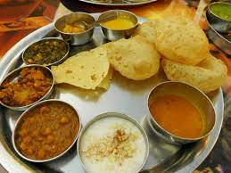
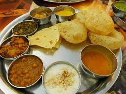
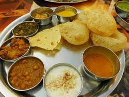

Culinary Chronicles: Showcasing the Best Food in the World
A website by: Kehinde
These are my top 6 cuisines
Italian
Japanese
Indian
Thai
Mexican
French
Who wouldnt love this food?

These are my top 6 favorite dishes
BaconEggandChesse
Jollof rice
Pineapple Fried Rice
Seafood Boil
Who wouldnt love this food?
list of recipes
Banana Banana Bread
World's Best Lasagna
Super-Delicious Zuppa Toscana
Good Old-Fashioned Pancakes
 


